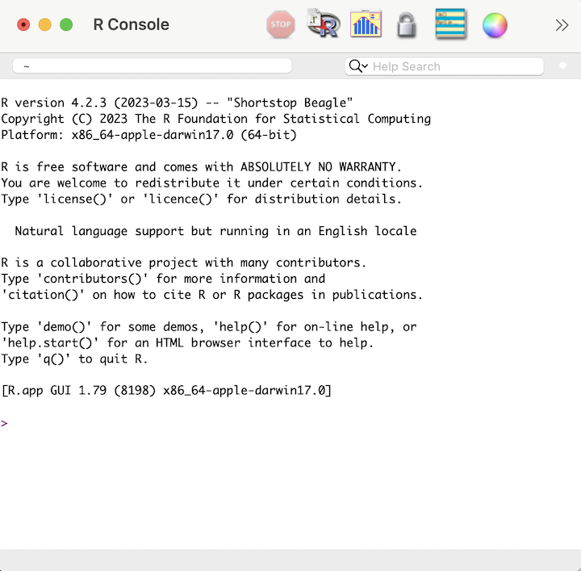
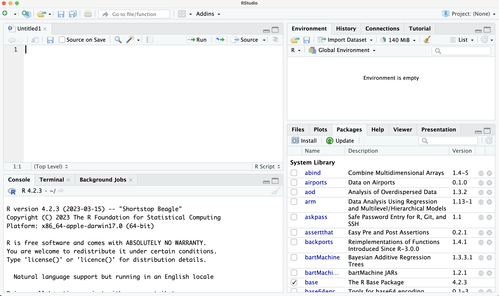
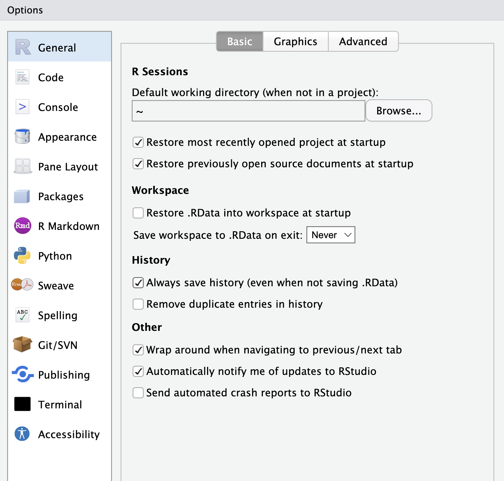

x <- 2+3
x <- x+1
x
#> [1] 61 Welcome
This chapter will introduce you to R as a programming language and show you how we can use this language in different ways: directly through the R console, using RStudio, and using Jupyter Notebooks.
1.1 Why R?
What are some of the benefits of using R?
- R is built for statisticians and data analysts.
- R is open source.
- R has most of the latest statistical methods available.
- R is flexible.
Since R is built for statisticians, it is built with data in mind. This comes in handy when we want to streamline how we process and analyze data. It also means that many statisticians working on new methods are publishing user-created packages in R, so R users have access to most methods of interest. R is also an interpreted language, which means that we do not have to compile our code into machine language first: this allows for simpler syntax and more flexibility when writing our code, which also makes it a great first programming language to learn.
Python is another interpreted language often used for data analysis. Both languages feature simple and flexible syntax, but while python is more broadly developed for usage outside of data science and statistical analyses, R is a great programming language for those in health data science. I use both languages and find switching between them to be straightforward, but I do prefer R for anything related to data or statistical analysis.
1.1.1 Installation of R and RStudio
To run R on your computer, you will need to download and install R. This will allow you to open the R application and run R code interactively. However, to get the most out of programming with R, you will want to install RStudio, which is an integrated development environment (IDE) for R and python. RStudio offers a nice environment for writing, editing, running, and debugging R code. We will talk through more of the benefits of using RStudio below.
Each chapter in this book is written as a Jupyter notebook but can also be downloaded as an R markdown file. You can open R Markdown files in RStudio to run the code as you read and complete the practice questions and exercises. Alternatively, at the top of these pages, you can open each of these chapters as a Jupyter notebook through Binder. This will open an interactive, online session for you to run the R code. We recommend this option for the best viewing and learning experience, though if you would like to run the Jupyter notebooks on your own machine, you will need to install Jupyter and the associated R kernel.
1.2 The R Console
The R console provides our first intro to code in R. The image below shows what the console will look like when you open it. You should see a blinking cursor - this where we can write our first line of code!

To start, type 2+3 and press ENTER. You should see that 5 is printed below that code and that your cursor is moved to the next line.
1.2.1 Basic Computations and Objects
In the example above, we coded a simple addition. Try out some other basic calculations using the operators below:
- Addition:
5+6
- Subtraction:
7-2
- Multiplication:
2*3
- Division:
6/3
- Exponentiation:
4^2
- Modulo:
100 %% 4
For example, use the modulo operator to find what 100 mod 4 is. It should return 0 since 100 is divisible by 4.
If we want to save the result of any computation, we need to create an object to store our value of interest. An object is simply a named data structure that allows us to reference that data structure. Objects are also commonly called variables. In the code below, we create an object x which stores the value 5 using the assignment operator <-. The assignment operator assigns whatever is on the right hand side of the operator to the name on the left hand side. We can now reference x by calling its name. Additionally, we can update its value by adding 1. In the second line of code, the computer first finds the value of the right hand side by finding the current value of x before adding 1 and assigning it back to x.
We can create and store multiple objects by using different names. The code below creates a new object y that is one more than the value of x. We can see that the value of x is still 5 after running this code.
x <- 2+3
y <- x
y <- y + 1
x
#> [1] 51.2.2 Naming Conventions
As we start creating objects, we want to make sure we use good object names. Here are a few tips for naming objects effectively:
- Stick to a single format. We will use snake_case, which uses underscores between words (e.g.
my_var,class_year). - Make your names useful. Try to avoid using names that are too long (e.g.
which_day_of_the_week) or do not contain enough information (e.g.,x1,x2,x3). - Replace unexplained values with an object. For example, if you need to do some calculations using 100 as the number of participants, create an object
n_partwith value 100 rather than repeatedly using the number. This makes the code easy to update and helps the user avoid possible errors.
1.3 RStudio and R Markdown
If we made a mistake in the code above, we would have to retype everything from the beginning. However, when we write code, we often want to be able to run it multiple times and develop it in stages. R scripts and R markdown files allow us to save all of our R code in files that we can update and re-run, which allows us to create reproducible and shareable analyses. We will now move to RStudio as our development environment to demonstrate creating an R script. When you open RStudio, you will see multiple windows. Start by opening a new R file by going to File -> New File -> R Script. You should now see several windows.

In the code editor window in the top left, add the following code to your .R file and save the file. Note that here we used snake_case to name our objects!
# Calculate student to faculty ratio, 2023 enrollment
num_students <- 132
num_faculty <- 23
student_fac_ratio <- num_students/num_facultyThe first line starts with # and does not contain any code. This is a comment line, which allows us to add context, intent, or extra information to help the reader understand our code. A good rule of thumb is that we want to write enough comments so that we could open our code in six months and be able to understand what we were doing. As we develop longer chunks of code, this will become more important.
1.3.1 Video Tour of RStudio and R Markdown
In order to run the code in the script, we need to tell RStudio we are ready to run it. The video below shows you how to run a script and gives a tour of the other windows you see in RStudio. It will also introduce you to R Markdown files, which integrate text and code together. As we described above, each chapter in this book can be downloaded as a corresponding R Markdown file.
<iframe width="700" height="500" src="https://www.youtube.com/embed/WoGbZnkiQEM" title="YouTube video player" frameborder="0" allow="accelerometer; autoplay; clipboard-write; encrypted-media; gyroscope; picture-in-picture; web-share" allowfullscreen></iframe>1.3.2 Calling Functions
When we use R, we have access to all the functions available in base R. A function takes in one or more inputs and returns a single output object. Let’s first use the simple function exp(). This exponential function takes in one (or more) numeric values and exponentiates them. The code below computes \(e^3\).
exp(3)
#> [1] 20.1Some other simple functions are shown below that all convert a numeric input to an integer value. The ceiling() and floor() functions returns the ceiling and floor of your input, and the round() function will round your input to the closest integer. Note that the round() function will round a 5 to the closest even integer.
ceiling(3.7)
#> [1] 4floor(3.7)
#> [1] 3round(2.5)
#> [1] 2
round(3.5)
#> [1] 4If we want to learn about a function, we can use the help operator ? by typing it in front of the function you are interested in: this will bring up the documentation for that particular function. This documentation will often tell you the usage of the function, the arguments (the object inputs), the value (information about the returned object), and will give some examples of how to use the function. For example, if we want to understand the difference between floor() and ceiling(), we can call ?floor and ?ceiling. This should bring up the documentation in your help window. We can then read that the floor function rounds a numeric input down to the nearest integer whereas the ceiling function rounds a numeric input up to the nearest integer.
1.3.3 Working Directories and Paths
Let’s try using another example function: read.csv(). This function reads in a comma-delimited file and returns the information as a data frame (try typing ?read.csv in the console to read more about this function). We will learn more about data frames in Chapter 2. The first argument to this function is a file, which can be expressed as either a filename or a path to a file. First, download the file fake_names.csv from this book’s github repository. By default, R will look for the file in your current working directory. To find the working directory, you can run getwd(). You can see below that my current working directory is where the book content is on my computer.
getwd()
#> [1] "/Users/Alice/Dropbox/MasteringHDSUsingR/book"You can either move the .csv file to your current working directory and load it in, or you can specify the path to the .csv file. Another option is to update your working directory by using the setwd() function (e.g. setwd('/Users/Alice/Dropbox/health-data-science-in-r/book/data')). If you receive an error that a file cannot be found, you most likely have the wrong path to the file or the wrong file name. Below, I chose to specify the path to the downloaded .csv file, saved this file to an object called df, and then printed that df object.
df <- read.csv("data/fake_names.csv") # update this with the path to your file
df
#> Name Age DOB City State
#> 1 Ken Irwin 37 6/28/85 Providence RI
#> 2 Delores Whittington 56 4/28/67 Smithfield RI
#> 3 Daniel Hughes 41 5/22/82 Providence RI
#> 4 Carlos Fain 83 2/2/40 Warren RI
#> 5 James Alford 67 2/23/56 East Providence RI
#> 6 Ruth Alvarez 34 9/22/88 Providence RIWe can see that df contains the information from the .csv file and that R has printed the first few observations of the data.
1.3.4 Installing and Loading Packages
When working with data frames, we will often use the tidyverse package (https://www.tidyverse.org/), which is actually a collection of R packages for data science applications. An R package is a collection of functions and/or sample data that allow us to expand on the functionality of R beyond the base functions. You can check whether you have the tidyverse package installed by going to the package pane in RStudio or by running the command below, which will display all your installed packages.
installed.packages()
If you don’t already have a package installed, you can install it using the install.packages() function. Note that you have to include single or double quotes around the package name when using this function. You only have to install a package one time.
install.packages('tidyverse')
The function read_csv() is another function to read in comma-delimited files that is part of the readr package in the tidyverse. However, if we tried to use this function to load in our data, we would get an error that the function cannot be found. That is because we haven’t loaded in this package. To do so, we use the library() function. Unlike the install.packages() function, we do not have to use quotes around the package name when calling this library() function. When we load in a package, we will see some messages. For example, below we see that this package contains the functions filter() and lag() that are also functions in base R. In future chapters, we will suppress these messages to make the chapter presentation nicer. After loading the tidyverse package, we can now use the read_csv() function as shown below.
library(tidyverse)
#> ── Attaching core tidyverse packages ──────────────── tidyverse 2.0.0 ──
#> ✔ dplyr 1.1.3 ✔ readr 2.1.4
#> ✔ forcats 1.0.0 ✔ stringr 1.5.0
#> ✔ ggplot2 3.4.4 ✔ tibble 3.2.1
#> ✔ lubridate 1.9.2 ✔ tidyr 1.3.0
#> ✔ purrr 1.0.1
#> ── Conflicts ────────────────────────────────── tidyverse_conflicts() ──
#> ✖ dplyr::filter() masks stats::filter()
#> ✖ dplyr::lag() masks stats::lag()
#> ℹ Use the conflicted package (<http://conflicted.r-lib.org/>) to force all conflicts to become errorsdf <- read_csv("data/fake_names.csv", show_col_types=FALSE)
df
#> # A tibble: 6 × 5
#> Name Age DOB City State
#> <chr> <dbl> <chr> <chr> <chr>
#> 1 Ken Irwin 37 6/28/85 Providence RI
#> 2 Delores Whittington 56 4/28/67 Smithfield RI
#> 3 Daniel Hughes 41 5/22/82 Providence RI
#> 4 Carlos Fain 83 2/2/40 Warren RI
#> 5 James Alford 67 2/23/56 East Providence RI
#> # ℹ 1 more rowAlternatively, we could have told R where to locate the function by adding readr:: before the function. This tells it to find read_csv function in the readr package. This can be helpful even if we have already loaded in the package, since sometimes multiple packages have functions with the same name.
df <- readr::read_csv("data/fake_names.csv", show_col_types = FALSE)1.3.5 RStudio Global Options
You have now had a basic tour of RStudio. Before we transition to introducing Jupyter Notebooks, take a look at your Global Options (under Tools). We highly recommend that you update your RStudio options to not save your workspace on exiting or load it on starting. This will ensure that you create fully reproducible code and avoid possible errors or confusion.

1.4 Jupyter Notebooks
Jupyter notebooks are an alternative way to to edit and share code. Each chapter of this book was created using a Jupyter notebook, and these notebooks are the best way to interact with the content. Similar to R Markdown, a Jupyter notebook allows us to intersperse code and text. However, this is done using individual cells that are either markdown (text) or code. Each of these cells can be run alone without us having to compile the full notebook. Jupyter notebooks can also be created using julia, python, or R (hence the name ju-pyt-er).
1.4.1 Video Tour of Jupyter Notebooks and Binder
At the top of this chapter is a rocket button to open this Notebook using Binder. Binder creates an online computational environment to host your notebooks that already has all the R packages you’ll need for this book installed, which is the easiest way to interact with the content in this book. Click that link to open this chapter and then view the video below to see how to use this feature when reading this book.
<iframe width="700" height="500" src="https://www.youtube.com/embed/aZbvJc5w5Og" title="YouTube video player" frameborder="0" allow="accelerometer; autoplay; clipboard-write; encrypted-media; gyroscope; picture-in-picture; web-share" allowfullscreen></iframe>1.5 Tips and Reminders
We end this chapter with some final tips and reminders.
Keyboard Shortcuts: Both RStudio and Jupyter notebooks have useful keyboard shortcuts that will make your programming experience more streamlined. It is worth getting familiar with some of the most common keyboard shortcuts - here are some helpful cheatsheets for keyboard shortcuts in Jupyter Notebooks and in RStudio.
Asking for help: Within R, you can use the
?operator or thehelp()function to pull up documentation on a given function. This documentation is also available online.Finding all objects: You can use the Environment panel or
ls()function to find all current objects. If you have an error that an object you are calling does not exist, take a look to find where you defined it.Checking packages: If you get an error that a function does not exist, check to make sure you have loaded that package using the
libraryfunction. The list of packages used in this book is given on the github repository homepage.